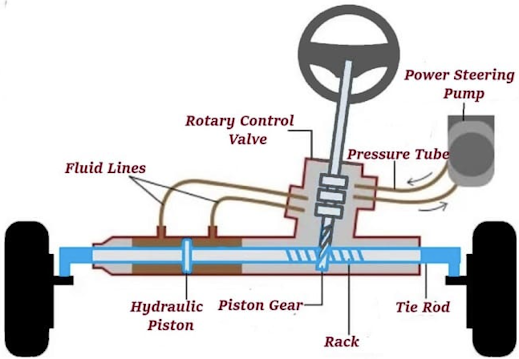

Steering System
The steering system allows the driver to control the direction of the vehicle. It includes components like the steering wheel, steering column, rack and pinion or steering box, and tie rods.
How Steering Works
- Steering Wheel: The driver’s input device for turning the vehicle.
- Steering Column: Connects the wheel to the steering mechanism.
- Rack and Pinion: Converts rotary motion into linear motion to turn the wheels.
- Tie Rods: Transmit motion from the steering rack to the wheels.
Key Components
- Steering Wheel: User interface for steering control.
- Steering Column: Houses linkages and often electrical controls.
- Power Steering Pump: Assists with steering effort in hydraulic systems.
- Electronic Control Unit: Manages input in electric power steering (EPS) systems.